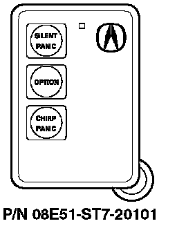

1994-96 Integra
1994-96 Integra with dealer-installed security system
Programming the Transmitter
NOTES:
^ The system uses a stacking-type memory that accepts up to four transmitters. If you program a fifth transmitter, the system's memory for the first transmitter is pushed out, and it will no longer work.
^ To clear a lost or stolen transmitter from the system's memory, erase all transmitter codes and then reprogram them. Refer to the security system owner's manual.
^ If the valet/disarm button is released before programming is complete, the system will exit the programming mode.
1. Turn the ignition switch to ON (II).
2. Press and hold the Valet-Disarm button on the dashboard lower cover. (Continue to hold the button during this procedure, or programming will be cancelled.) The LED on the upper steering column cover flashes when the system is in programming mode.
3. Press the top button on the transmitter. Check that the parking lights flash to confirm that the transmitter's code was accepted.
4. Press the top button on each of the remaining transmitters. Check that the parking lights flash after each transmitter code is accepted.
5. Release the Valet-Disarm button to exit the programming mode.
Ordering a Transmitter
Transmitters can be ordered only by authorized Acura dealers. Order them from American Honda using normal parts ordering procedures.
Batteries for the Transmitter
The battery number is CR2025. Each transmitter uses one battery.